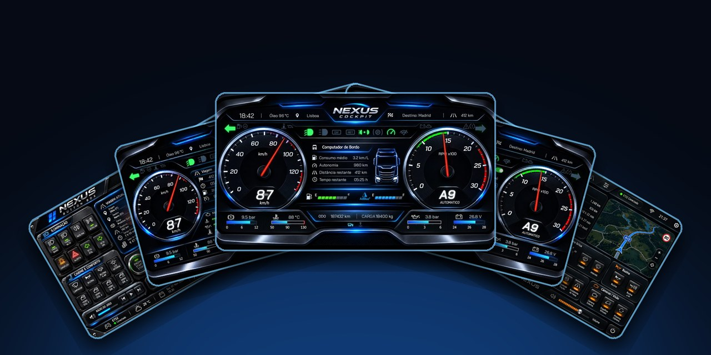
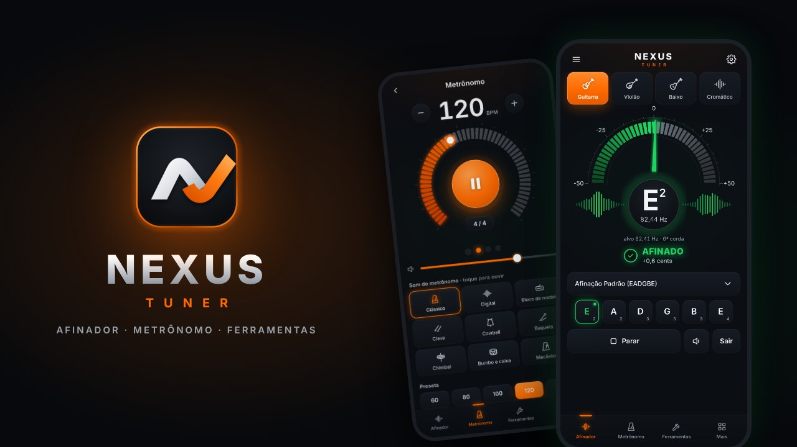
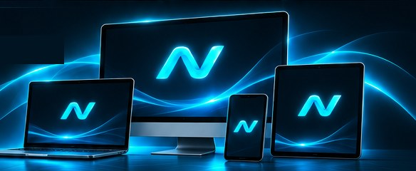

para simulação, música e produtividade.
Um ecossistema em constante evolução, com ferramentas modernas, estáveis e conectadas à sua paixão, seja nos simuladores, na música ou na gestão de projetos.
Nossos Aplicativos
Conheça o ecossistema Nexus e leve sua experiência a outro nível.

NNexus Cockpit
Painéis digitais, telemetria, manutenção, Smart Fuel e muito mais para ETS2 e ATS.

NNexus Tuner
Afinador digital de alta precisão para guitarra, baixo e violão, com metrônomo.
NNexus Drum Tuner
Afinador profissional para bateria: Hz por tambor, parafusos, espectro e presets.
NNexus Expansion
Plataforma de tráfego pago e gestão de campanhas para seus projetos.
Por que escolher a Nexus?
Tecnologia, desempenho e uma experiência feita para você.
Alto Desempenho
Aplicativos leves, estáveis e otimizados.
Integração Total
Soluções que se complementam.
Multiplataforma
Windows, Android e iOS.
Atualizações Constantes
Novos recursos e melhorias frequentes.
Seguro e Confiável
Coletamos só o necessário. Conta sempre opcional.
Comunidade Ativa
Sugestões de quem usa entram direto nos apps.
Ecossistema Integrado
Aplicativos que se conectam, evoluem e ampliam suas possibilidades.
- Soluções para simulação e entretenimento
- Ferramentas musicais profissionais
- Plataforma de produtividade e gestão
- Experiência unificada e em constante evolução
